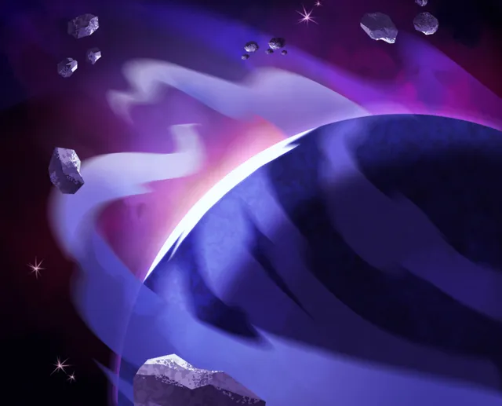
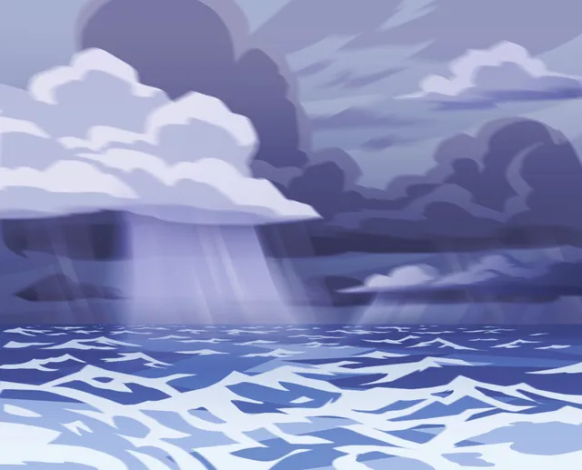
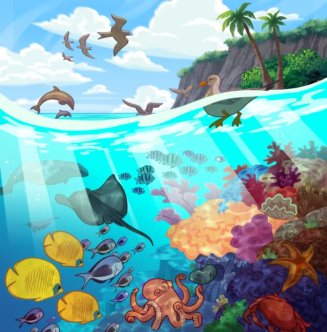
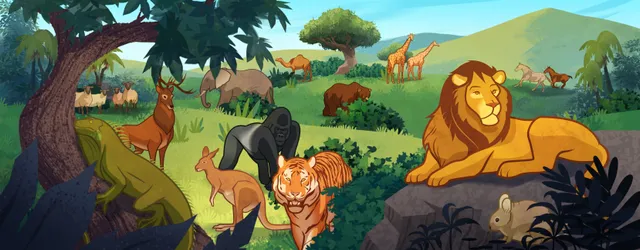
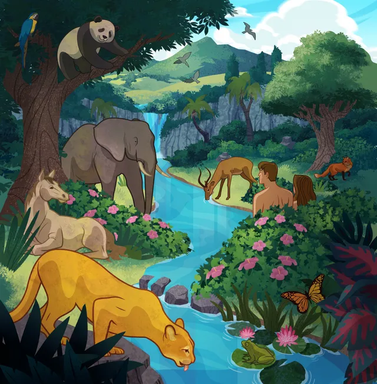

"Behold, I am Jesus Christ the Son of God. I created the heavens and the earth, and all things that in them are. I was with the Father from the beginning. I am in the Father, and the Father in me; and in me hath the Father glorified his name."
---3 Nephi 9:15
Why is the purpose of the creation?
The purpose of the creation is that our Heavenly Father wants us to be more like him, so He prepared a plan for us. We were very happy to be a part of His plan. Furthermore, we also want to gain new experiences. Therefore, our Heavenly Father and his like Son Jesus Christ created this earth.
The processes of the creation
Period One

"And I, God, said: Let there be light; and there was light. And I, God, saw the light; and that light was good. And I, God, divided the blight from the darkness. And I, God, called the light Day; and the darkness, I called Night; and this I did by the word of my power, and it was done as I spake; and the evening and the morning were the first day." (Moses 2:3-5)
Period Two

"And again, I, God, said: Let there be a firmament in the midst of the water, and it was so, even as I spake; and I said: Let it divide the waters from the waters; and it was done; And I, God, made the firmament and divided the waters, yea, the great waters under the firmament from the waters which were above the firmament, and it was so even as I spake. And I, God, called the firmament Heaven; and the evening and the morning were the second day. (Moses 2:6-8)"
Period Three
"And I, God, said: Let the earth bring forth grass, the herb yielding seed, the fruit tree yielding fruit, after his kind, and the tree yielding fruit, whose seed should be in itself upon the earth, and it was so even as I spake." (Moses 2:11)
Period Four
"And I, God, said: Let there be alights in the firmament of the heaven, to divide the day from the night, and let them be for signs, and for seasons, and for days, and for years; And let them be for lights in the firmament of the heaven to give light upon the earth; and it was so. (Moses 2:14-15)"
Period Five

"And I, God, said: Let the waters bring forth abundantly the moving creature that hath life, and fowl which may fly above the earth in the open firmament of heaven. And I, God, created great whales, and every living creature that moveth, which the waters brought forth abundantly, after their kind, and every winged fowl after his kind; and I, God, saw that all things which I had created were good. (Moses 2:20-21)"
Period Six

"And I, God, said: Let the earth bring forth the living creature after his kind, cattle, and creeping things, and beasts of the earth after their kind, and it was so; And I, God, made the beasts of the earth after their kind, and cattle after their kind, and everything which creepeth upon the earth after his kind; and I, God, saw that all these things were good. And I, God, said unto mine Only Begotten, which was with me from the beginning: Let us make man in our image, after our likeness; and it was so. And I, God, said: Let them have dominion over the fishes of the sea, and over the fowl of the air, and over the cattle, and over all the earth, and over every creeping thing that creepeth upon the earth. And I, God, created man in mine own image, in the image of mine Only Begotten created I him; male and female created I them. (Moses 2:24-27)"
Period Seven

"And on the seventh day I, God, ended my work, and all things which I had made; and I rested on the seventh day from all my work, and all things which I had made were finished, and I, God, saw that they were good; And I, God, blessed the seventh day, and sanctified it; because that in it I had rested from all my work which I, God, had created and made. (Moses 3:2-3)"